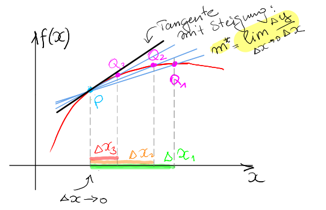

Kapitel 5 Differentialrechnung
Die Ableitung einer Funktion beschreibt die Veränderung einer Variablen als Reaktion auf die Veränderung einer anderen Variablen.
Beispiele in der Ökonomie:
Wie ändert eine Firma ihr Produktionsniveau in Folge gestiegener Kosten?
Welchen Einfluss hat eine Veränderung in der Geldmenge auf die Inflation?
Wie gestalte ich den Konsum so, dass der Nutzen maximal ist?
Implizit wird diese Fragestellung durch die funktionale Verknüpfung \(y = f (x)\) erfasst. Explizit wird dies ausgedrückt als Einfluss einer Veränderung von \(x\), geschrieben als \(\Delta x\), auf die Veränderung in \(y\), geschrieben als \(\Delta y\).
In der Ökonomie wird diese Art der Analyse auch als Grenzanalyse bezeichnet. Z.B. Gewinnmaximierung: “Eine profitmaximierende Firma erhöht ihren Output bis der Grenzerlös (\(\Delta R\)) die Grenzkosten (\(\Delta C\)) erreicht oder übersteigt.”
5.1 Definition der Tangente
Eine umgangssprachliche Beschreibung der Tangentengeraden lautet wie folgt:
“Eine Tangente ist eine Gerade, die eine Funktion nur in einem Punkt berührt.”
Im Graphen berührt die Gerade \(l_P\) die Funktion nur im Punkt \(P\), ohne die Funktion an einem anderen Punkt zu schneiden.
Für eine glatte Funktion ist die Steigung der Tangente identisch zur Steigung der Funktion in dem Berührungspunkt.
Die Steigung der Tangente in \(P\) entspricht der Ableitung von \(y = f (x)\) im Punkt \(P\).
Die obige Aussage deckt unser allgemeines Verständnis der Tangente gut ab, eignet sich aber nicht als Definition.
Denn: Die Tangente kann die Funktion in einem weiter entfernt liegenden Punkt schneiden; daher müssen wir uns auf geeignete Umgebungen des Punkts \(P\) beschränken (siehe die Abbildung unten für \(f(x)=\sin(x)\)). In Einzelfällen kann die Tangente die Funktion sogar schneiden, wie hier im Beispiel \(y = x^3\) an der Stelle \(x = 0\) (siehe die Abbildung unten für \(f(x)=x^3\)).
5.1.1 Sekante und Tangente
Wir wenden uns daher einer formalen Herleitung des Ableitungsbegriffs zu. Zunächst definieren wir weitere Konzepte, die eine Rolle beim Definieren einer Tangente spielen.
Definition 5.1 (Sekante) Es seien \(P = (x_1, f (x_1))\) und \(Q = (x_2, f (x_2))\) zwei Punkte im Graphen der Funktion \(f\) . Die Sekante von \(P\) und \(Q\) ist die Gerade, die \(P\) und \(Q\) verbindet.
- Die Steigung der Sekanten, genannt Differenzenquotient, ist \[{m}_{PQ}= \frac{f(x_2)-f(x_1)}{x_2-x_1}=: \frac{\Delta y}{ \Delta x},\] wobei \(\Delta y = f (x_2) − f (x_1)\) und \(\Delta x = x_2 − x_1\).
5.1.2 Von der Sekante zur Tangente
Fixieren Sie nun \(P = (x_0,f (x_0))\) und betrachten Sie eine Folge von Werten \(({x_n})_{n \in \mathbb{N}}\), die gegen \(x_0\) konvergiert.
Dies ist äquivalent zu der Formulierung, dass \(\Delta x_n = x_n − x_0\) gegen \(0\) konvergiert.
Falls für jede mögliche solcher Folgen die Steigungen der Sekanten existieren und diese Steigungen gegen einen Grenzwert \(m^*\) konvergieren, dann ist die Tangente diejenige Gerade mit Steigung \(m^*\), die \(P\) berührt.

Definition 5.2 (Tangente) Es sei \(f\) auf einem offenen Intervall um \(x_0\) definiert. Falls
\[m^* = \lim_{\Delta x \rightarrow 0} \frac{f(x_0+ \Delta x) -f(x_0)}{\Delta x}\]
existiert, dann ist die Gerade durch \((x_0,f (x_0))\) mit Steigung \(m^*\) die Tangente von \(f\) im Punkt \(x_0\).
Beispiel 5.1 (Sekante und Tangente) Es seien \(f (x) = x^2\) , \(P = (2, 4)\) und \(Q=(3, 9)\).
Man prüft leicht, dass \(\Delta x = 3-2=1\) und \(\Delta y =9-4=5\), sodass die Steigung der Sekanten \(\Delta y/\Delta x = 5/1 = 5\) ist.
Wählt man \(Q^\prime = (4,16)\), so ist die Sekantensteigung \(\Delta y/\Delta x = 12/2 = 6\).
Wählen Sie nun die Folge \(\Delta x_n = 1/n\), \(n \geq 1\).
Dann: \(\Delta x_n \rightarrow 0\), wenn \(n \rightarrow \infty\).
Für einen beliebigen Punkt \(x\) bestimmen wir die Steigung der Tangente:
\[\begin{align}\frac{f(x+ \Delta x_n)-f(x)}{ \Delta x_n}&=\frac{(x+1/n)^2-x^2}{1/n} \\ & = \frac{x^2+2x/n+1/n^2-x^2}{1/n}\\ &= 2x + \frac{1}{n}, \end{align}\]
und \(\lim _{ \Delta x \rightarrow 0} 2x+1/n = 2x\) (= die Ableitung von \(f(x)=x^2\) ).
5.2 Definition der Ableitung
Definition 5.3 (Ableitung) Die Ableitung (der Differentialquotient) einer Funktion \(f\) im Punkt \(x,\) geschrieben als \(f' (x),\) ist die Steigung der Tangente in diesem Punkt: \[f'(x)= \lim_{ \Delta x \rightarrow 0 } \frac{f(x+ \Delta x)-f(x)}{ \Delta x}.\]
Die sogenannte Leibniz-Notation der Ableitung ist \(f'(x)= \frac{df(x)}{dx}\),
wobei der Differentialoperator \(d\) eine infinitesimal kleine Änderung ausdrückt.
Definition 5.4 (Differential) Es sei \(f\) eine Funktion mit Ableitung \(f'\). Das Differential von \(f\) an der Stelle \(x\) ist \(df (x) = f ' (x) dx\).
Das Differential drückt aus, dass sich \(f\) an der Stelle \(x\) näherungsweise um \(f' (x) dx\) ändert, wobei – etwas salopp ausgedrückt – \(dx\) eine infinitesimale Änderung von \(x\) bezeichnet und \(f'\) die Richtung der Änderung von \(f\) vorgibt.
Beispiel 5.2 (Gesamtkosten und Grenzkosten) Die Gesamtkostenfunktion \(y \mapsto C( y )\) einer Firma drückt die Kosten als Funktion der Anzahl \(y\) produzierter Einheiten aus.
Das Verhältnis \(\frac{ \Delta C}{ \Delta y} = \frac{C(y+ \Delta y) - C( y )}{ \Delta y}\) reflektiert die durchschnittlichen zusätzlichen Kosten pro Einheit, wenn zusätzlich \(\Delta y\) Einheiten produziert werden.
Der Grenzwert dieses Verhältnisses, wenn \(\Delta y → 0\), ist die instantane Änderungsrate; in der Ökonomie stellt diese Rate die Grenzkosten (auch Marginalkosten) dar: \[\lim_{ \Delta y \rightarrow 0 \ } \frac{ \Delta C}{ \Delta y} = \lim_{ \Delta y \rightarrow 0 \ } \frac{C(y+ \Delta y) - C( y )}{ \Delta y} = C'( y ) \]
Beispiel einer linearen Kostenfunktion:

In der Praxis ist die Annahme einer linearen Kostenfunktion, also konstanter Grenzkosten, häufig unrealistisch (vgl. früheres Beispiel der Gitarrenmanufaktur). Stattdessen führt eine höhere Produktion häufig zu höheren Grenzkosten (zumindest aus kurzfristiger Sicht).
Dies wird beispielsweise durch eine quadratische Kostenfunktion ausgedrückt:
5.3 Differenzierbarkeit
Definition 5.5 (Differenzierbarkeit) Die Funktion \(f\) ist differenzierbar im Punkt \(x\), falls sie in einer offenen Umgebung von \(x\) definiert ist und falls \[\lim_{ \Delta x \rightarrow 0 \ } \frac{ f(x+ \Delta x)-f(x)}{ \Delta x }\]
existiert und endlich ist.
Eine Funktion heißt differenzierbar, falls sie überall in ihrem Definitionsbereich differenzierbar ist.
Ist \(f\) differenzierbar in \(x\), dann existieren die linksseitige Ableitung und die rechtsseitige Ableitung und nehmen denselben Wert an:
\[\lim_{ \Delta x \uparrow 0 \ } \frac{ f(x+ \Delta x)-f(x)}{ x\Delta } = \lim_{ \Delta x \downarrow 0 \ } \frac{ f(x+ \Delta x)-f(x)}{ x\Delta }.\]
Beispiel 5.3 (Differenzierbarkeit) Wir betrachten die Funktion \[f(x)=\begin{cases} x, &\text{ falls } x<1 \\ 2-x, &\text{ falls } x \geq 1 \end{cases}.\]
Obwohl die Funktion im Punkt \(x = 1\) stetig ist, ist sie in diesem Punkt nicht differenzierbar.
Denn: Im Punkt \(x = 1\) gilt \[\lim_{ \Delta x \uparrow 0 \ } \frac{ f(1+ \Delta x)-f(1)}{ \Delta x } = \lim_{ \Delta x \uparrow 0 \ } \frac{ 1+ \Delta x-1 }{ \Delta x } =1\]
und
\[\lim_{ \Delta x \downarrow 0 \ } \frac{ f(1+ \Delta x)-f(1)}{ \Delta x } = \lim_{ \Delta x \downarrow 0 \ } \frac{ (2-(1+ \Delta x))-(2-1) }{ \Delta x } = -1.\]

D.h. \[\lim_{ \Delta x \uparrow 0 \ } \frac{ f(1+ \Delta x)-f(1)}{ \Delta x } \not= \lim_{ \Delta x \downarrow 0 \ } \frac{ f(1+ \Delta x)-f(1)}{ \Delta x }\]
und die Funktion ist im Punkt \(x=1\) nicht differentierbar.
Wir betrachten den Zusammenhang zwischen Differenzierbarkeit und Stetigkeit.
Theorem 5.1 (Differenzierbarkeit und Stetigkeit) Falls eine Funktion \(f\) im Punkt \(x\) differenzierbar ist, so ist sie in \(x\) auch stetig.
Die Umkehraussage gilt i.A. nicht, wie das vorangegangene Beispiel zeigt.
Man kann äquivalent sagen: Stetigkeit ist eine notwendige, aber keine hinreichende Bedingung für Differenzierbarkeit.
Wir erweitern den Begriff der Differenzierbarkeit auf geschlossene Intervalle.
Definition 5.6 (Differenzierbarkeit auf einem Intervall) Eine Funktion \(f\) , definiert auf dem Intervall \([a,b]\), ist differenzierbar auf \([a,b]\), falls gilt:
die rechtsseitige Ableitung für \(f (a)\) existiert;
die linksseitige Ableitung für \(f (b)\) existiert;
\(f\) ist differenzierbar auf dem offenen Intervall \((a,b)\).
5.4 Ableitungsregeln
Mithilfe der folgenden Regeln können wir Ableitungen konkret bestimmen (Differenzierbarkeit stets vorausgesetzt).
Theorem 5.2 (Ableitungsregeln) Im Folgenden, seien \(c\), \(m\), \(n\) und \(b\) Konstanten.
\[\begin{equation*} \begin{array}[t]{lll} \hline \text{(Funktions-)Typ} & \text{Funktion} & \text{Ableitung}\\\hline \text{1.konstante Funktion} & f(x)=c & f^\prime(x)=0\\ \text{2.lineare Funktion} & f(x)=mx + b & f^\prime(x)=m\\ \text{3.Potenzfunktion} & f(x)=x^n & f^\prime(x)=n\, x^{n-1}\\ \text{4.Skalierung} & g(x)=c\, f(x) & g^\prime(x)=c\, f^\prime(x)\\ \text{5.Summenregel} & f(x)=g_1(x) + g_2(x) & f^\prime(x) = g_1^\prime(x) + g_2^\prime(x)\\ & f(x)=\sum_{i=1}^n g_i(x) & f^\prime(x) = \sum_{i=1}^n g_i^\prime(x)\\ \text{6.Produktregel} & f(x)=g(x)\, h(x) & f^\prime(x) = g^\prime(x) h(x) + g(x) h^\prime(x)\\ \text{7.Kettenregel} & f(x)=g(h(x))& f^\prime(x)=g^\prime(h(x))\, h^\prime(x)\\ \hline \end{array} \end{equation*}\] \[\begin{equation*} \begin{array}[t]{lll} \hline \text{(Funktions-)Typ}\!\!\!& \text{Funktion} & \text{Ableitung}\\\hline \text{8.Quotientenregel} & \displaystyle f(x)=\frac{g(x)}{h(x)}, h(x)\not=0 & \displaystyle f^\prime(x) = \frac{g^\prime(x) h(x) - g(x) h^\prime(x)} {(h(x))^2}\\ \text{10.Inverse} & y=f(x)\text{, wobei }& \displaystyle (f^{(-1)})^\prime(y) = \frac{1}{f^\prime(x)} = \frac{1}{f^\prime(f^{(-1)}(y))}\\ & f^{(-1)}(y)=x \text{ existiert } & \\ &\text{und } f^\prime(x)\not=0 & \\ \text{11.Logarithmus} & \ln (x) & \displaystyle\ln^\prime(x)=\frac{1}{x}\\ & \log_a (x) & \displaystyle\log_a^\prime(x)=\frac{1}{x\cdot \ln (a)}\\ \text{12.Exponentialfkt.} & e^{x} & (e^{x})^\prime=e^{x}\\ & a^{x} & (a^{x})^\prime=a^{x}\ln (a)\\\hline \end{array} \end{equation*}\]
Beweise
Allgemein können Ableitungen über die Definition des Differentialquotienten (Definition 5.3) und bereits bewiesene Regeln bestimmt werden.- Konstante Funktion \(f(x)=c\): Die Ableitung wird bestimmt durch \[\begin{equation*} f^\prime(x) = \lim_{\Delta x\rightarrow 0} \frac{f(x+\Delta x)-f(x)}{\Delta x} = \lim_{\Delta x\rightarrow 0} \frac{c-c}{\Delta x}=0. \end{equation*}\]
- Für Potenzfunktionen \(f(x)=x^n\) benutzen wir die Binomialformel \[\begin{equation*} (x+y)^n = \sum_{k=0}^n \binom{n}{k} x^{n-k} y^k \end{equation*}\] und erhalten \[\begin{align*} \frac{(x+\Delta x)^n - x^n}{\Delta x} % &= \frac{\sum_{k=1}^n \binom{n}{k} x^{n-k} (\Delta x)^k} {\Delta x} % = \sum_{k=1}^n \binom{n}{k} x^{n-k} (\Delta x)^{k-1} \\% &= \binom{n}{1} x^{n-1} + % \underbrace{\sum_{k=2}^n \binom{n}{k} x^{n-k} (\Delta x)^{k-1}}_{\rightarrow 0 \text{ für } \Delta x\rightarrow0}= n\, x^{n-1} \end{align*}\]
- Produktregel: Für das Produkt \(f(x)=g(x) h(x)\) erhalten wir \[\begin{multline*} \frac{g(x+\Delta x) h(x+\Delta x) - g(x) h(x)}{\Delta x}\\ % \begin{aligned} &=\frac{g(x+\Delta x) h(x+\Delta x) + g(x) h(x+\Delta x) - g(x) h(x+\Delta x) - g(x) h(x)}{\Delta x}\\ % &=\frac{(g(x+\Delta x)-g(x))h(x+\Delta x) + g(x)(h(x+\Delta x)-h(x))} {\Delta x}\\ % &\rightarrow g^\prime(x) h(x) + g(x) h^\prime(x), \end{aligned} \end{multline*}\] wobei wir benutzt haben, dass: \[\begin{align*} \lim_{\Delta x\rightarrow 0} \frac{(g(x+\Delta x) - g(x)) h(x+\Delta x)} {\Delta x}&% = \lim_{\Delta x\rightarrow 0} \frac{(g(x+\Delta x) - g(x))} {\Delta x} \, \lim_{\Delta x\rightarrow 0} h(x+\Delta x) \end{align*}\]
- Kettenregel (\(f(x)=g(h(x))\)): Schreibe zunächst \[\begin{equation*} \frac{g(h(x+\Delta x)) - g(h(x))} {\Delta x} % = \frac{g(h(x+\Delta x)) - g(h(x))} {h(x+\Delta x)-h(x)} % \cdot \frac{h(x+\Delta x)-h(x)} {\Delta x} % \end{equation*}\] Für den ersten Term gilt \(\lim_{\Delta x\rightarrow 0} h(x+\Delta x)-h(x)=0\), sodass \[\begin{equation*} \displaystyle \frac{g(h(x+\Delta x))-g(h(x))} {h(x+\Delta x)-h(x)} \rightarrow g^\prime(h(x)). \end{equation*}\] Der zweite Term konvergiert gegen \(h^\prime(x)\).
- Quotientenregel (\(\displaystyle f(x)=\frac{g(x)}{h(x)}\)): \[\begin{align*} \left(\frac{g(x)}{h(x)}\right)^\prime &= \left(g(x) \frac{1}{h(x)}\right)^\prime \stackrel{\text{Produktregel}}= g^\prime(x) \frac{1}{h(x)} + g(x) \left(\frac{1}{h(x)}\right)^\prime \\% &= \frac{g^\prime(x) h(x)}{h(x)^2} + g(x) % \underbrace{ \left(h^{-1}(x)\right)^\prime.% } % _{\stackrel{\text{chain % rule, power % function}}=-1\cdot % h^{-2}(x) \cdot % h^\prime(x)}, \end{align*}\] Für \(\left(h^{-1}(x)\right)^\prime\) erhalten wir mit der Kettenregel und der Potenzregel: \[\begin{equation*} \left(h^{-1}(x)\right)^\prime = -1\cdot h^{-2}(x)\cdot h^\prime(x) = -\frac{h^\prime(x)}{h(x)^2}. \end{equation*}\]
- Für die Inverse benutzen wir \(y=f(x)\) und erhalten mit \(\Delta y=f(x+\Delta x)-f(x)\): \[\begin{align*} &\frac{f^{(-1)}(y+\Delta y) - f^{(-1)}(y)} {\Delta y} = \frac{f^{(-1)}(f(x)+f(x+\Delta x)-f(x)) - f^{(-1)}(f(x))} {f(x+\Delta x) - f(x)}\\ &= \frac{f^{(-1)}(f(x+\Delta x)) - f^{(-1)}(f(x))} {f(x+\Delta x)-f(x)} = \frac{\Delta x}{f(x+\Delta x)-f(x)} \rightarrow \frac{1}{f^\prime(x)} \end{align*}\]
- Für die Ableitung des Logarithmus, beachte zunächst, dass \(\ln (a^x)=x\cdot \ln(a)\), \(\ln(a/b)=\ln (a)-\ln (b)\) und dass \(\displaystyle \lim_{n\rightarrow \infty} \left(1+\frac{x}{n}\right)^n=\text{e}^x\). Dann: \[\begin{equation*} \ln^\prime(x)% = \frac{\ln(x+\Delta x)-\ln (x)} {\Delta x} % = \frac{1}{\Delta x} \ln \left(\frac{x+\Delta x}{x}\right)% = \ln\left(\left(\frac{x+\Delta x}{x}\right)^{1/\Delta x}\right). \end{equation*}\] Setze \(\displaystyle n=\frac{x}{\Delta x}\) und beachte, dass \(n\rightarrow\infty\), wenn \(\Delta x\rightarrow 0\). Mit \(n\rightarrow\infty\): \[\begin{equation*} \ln\left(1+\frac{1}{n}\right)^{n/x}% = \frac{1}{x} \ln \left(1+\frac{1}{n}\right)^n % \rightarrow \frac{1}{x} \ln(\text{e}) = \frac{1}{x}, \end{equation*}\]
- Schließlich, für die Exponentialfunktion nutzen wir, dass \[\begin{equation*} \left(\ln(\text{e}^x)\right)^\prime = x^\prime=1, \end{equation*}\] und daher, durch Anwenden der Kettenregel: \(\left(\ln\text{e}^x\right)^\prime=\frac{1}{\text{e}^x} (\text{e}^x)^\prime =1,\) woraus \(\left(\text{e}^x\right)^\prime=\text{e}^x\) folgt.
Beispiel 5.4 (Ableitung)
- Ableitungsregeln 1-5:
\[\begin{align}f(x) &= 0,1x^4 -x^3 + 3x^2 - 5x +10 \\ \rightarrow f'(x) &= 0,4x^3-3x^2 + 6x-5.\end{align}\]
- Ableitungsregeln 6 + 1-5:
\[\begin{align}f(x) &= (2x-1)(3-5x^2) \\ \rightarrow f'(x) &= \color{red}{(2x-1)'}(3-5x^2) + (2x-1) \color{blue}{(3-5x^2)'} \\ &= \color{red}{2}\cdot(3-5x^2) + (2x-1)\cdot \color{blue}{(-10x)}=\ldots\end{align}\]
- Ableitungsregeln 7 + 1-5:
\[\begin{align}f(x) &= (1-2x)^2 \\ \rightarrow f'(x) &=\big(\color{red}(\color{blue}{1-2x}\color{red}{)^2}\big)\color{blue}'\cdot\color{blue}{(1-2\color{orange}x)\color{orange}'} \\ &=\color{red}{2\cdot(\color{blue}{1-2x})}\cdot\color{orange}{(-2)}=\ldots\end{align}\]
- Ableitungsregeln 8 + 1-5:
\[\begin{align}f(x) &= \frac{2x-1}{3-5x^2} \\ \rightarrow f'(x) &= \frac{\color{red}{(2x-1)'}(3-5x^2) - (2x-1) \color{blue}{(3-5x^2)'}}{(3-5x^2)^2}\\ &= \frac{\color{red}{2}\cdot(3-5x^2) - (2x-1)\cdot \color{blue}{(-10x)}}{(3-5x^2)^2}=\ldots \end{align}\]
- Ableitungsregeln 10 + 1-5:
\(y=f(x)=x^2\) umstellen nach \(x\): \(\color{blue}x=f^{-1}(y)=\color{blue}{\sqrt{y}}.\) Dann nach Ableitungsregel 9:
\[\left(f^{-1}(y)\right)' = \frac1{f'(x)} = \frac 1{2\color{blue}x} = \frac1{2\color{blue}{\sqrt{y}}}.\]
- Ableitungsregeln 11 + 1-5, 7:
\[\begin{align}f(x)&=\log_{\color{blue}5}(\color{red}{2x})\\ \rightarrow f'(x)&=\underbrace{\frac 1{\color{red}{2x}\cdot \color{blue}{\ln5}}}_{äussere Abl.}\cdot \underbrace{\color{red}{2}}_{innereAbl.} = \frac 1{x\cdot\ln5}\end{align}\]
- Ableitungsregeln 12 + 1-5, 7:
\[f(x)=e^{-3x+5}\rightarrow f'(x) = e^{-3x+5}\cdot(-3x+5)' = (-3)e^{-3x+5}.\]
\(f’(x)=\)
\(f’(x)=\)
\(f’(z)=\)
\(f’(y)=\)
\(f’(x)=\)
Weitere Beispiele: Ökonomische Modelle und Ableitungen\(^\ast\)
Ableitungen von Funktionen, die ökonomische Zusammenhänge modellieren, haben in der Regel auch eine ökonomische Bedeutung. DIese wird in den folgenden Beispielen klar.
Beispiel 4.1 (Produktionsfunktion und Grenzproduktivität) Betrachten Sie die Produktionsfunktion \(TP(L) = L^a\) , \(a > 0\), welche den Input \(L\) (Arbeit) auf den Output \(TP (L)\) abbildet. Die Grenzproduktivität ist
\(MP (L) = dTP (L)/ \ dL = aL^{a−1}\) ; falls
\(a > 1\), dann ist \(MP (L)\) steigend in \(L\),
\(a = 1\), dann \(TP (L) = L\) und \(MP (L) = 1\),
\(a < 1\), dann ist \(MP (L)\) fallend in \(L\).
Beispiel 5.5 (Grenzerlös mit Produktregel) Der Erlös (Umsatz) bestimmt sich aus dem Preis eines Guts multipliziert mit der abgesetzten Menge, also \(TR(q) = pq\).
Eine im Wettbewerb stehende Firma wird den Preis als konstant annehmen (Marktpreis): \(\bar{p}\); der Grenzerlös ist daher \(MR(q) = dTR(q)/dq = \bar{p}\).
Aus Sicht eines Monopolisten sind Menge und Preis durch eine Nachfragefunktion \(q = D(p)\) bzw. durch deren Inverse \(p = D ^{(−1)}(q) =: p(q)\) verknüpft.
Der Gesamterlös des Monopolisten ist
\(TR(q) = p(q) q\)
und der Grenzerlös ist
\(MR(q)=TR'(q)= \frac{dTR(q)}{dq} = \frac{dp}{dq}q + p(q) \frac{dq}{dq} = p'(q)q+p\)
- Typischerweise gilt \(p' (q) < 0\).
Beispiel 5.6 (Durchschnitts- und Grenzkosten mit Quotientenregel) Die Durchschnittsfunktion einer Funktion \(f (x)\), \(x ≥ 0\), ist gegeben durch
\(A(x)= \frac{f(x)}{x}\) .
Die Quotientenregel ergibt
\(A'(x)= \frac{f'(x)x-1f(x)}{x^2} = \frac{1}{x} \left[ f'(x)-A(x) \right]\) .
mit Grenzfunktion \(f'\) .
Daher:
Falls \(f' (x) < A(x)\), dann \(A'(x) < 0\);
falls \(f' (x) = A(x)\), dann \(A' (x) = 0\);
falls \(f' (x) > A(x)\), dann \(A' (x) > 0\).
5.5 Ableitungen höherer Ordnung
Wiederholtes Ableiten ergibt Ableitungen höherer Ordnung \(f'\) , \(f''\) , \(f'''\), usw. (sofern sie existieren).
\(f'\) ist die erste Ableitung, \(f''\) ist die zweite Ableitung, usw.
- Wir schreiben auch
\(f''(x)= \frac{d^2f(x)}{dx^2}\) , usw..
- Für die \(n\)-te Ableitung wird auch die Notation \(f^{ (n)}\) benutzt.
Beispiel 5.7 (Einige Ableitungen höherer Ordnung) Die ersten vier Ableitungen von \(f (x) = x^ 4\) sind
\(f' (x) = 4x^3 , \ f''(x) = 12x^2 , \ f'''(x) = 24x, f ^{(4)}(x) = 24\). Alle höheren Ableitungen sind \(0\), also \(f ^{(n)} (x) = 0\), für \(n \geq 5\).
Existieren die ersten beiden Ableitungen, so heißt eine Funktion zweimal differenzierbar.
Mit der zweiten Ableitung lässt sich bestimmen, ob eine Funktion konvex oder konkav ist.
Theorem 5.3 (Ableitungen von Konvexen und Konkaven Funktionen) Es sei \(D \subset \mathbb{R}\) ein offenes Intervall und sei \(f: D \rightarrow \mathbb{R}\) zweimal differenzierbar. \(f\) ist konvex genau dann, wenn \(f''(x) \geq 0\) (konkav: \(f''(x)\leq 0\)) für alle \(x \in \mathbb{D}\).
\(f’(x)=\)
\(f’’(x)=\)
5.6 Der Satz von Taylor\(^\ast\)
In der Praxis stellt sich häufig folgendes Problem:
Der Wert einer differenzierbaren Funktion \(f\) ist an der Stelle \(x\) nur schwer zu berechnen; dafür sind aber der Funktionswert und sämtliche Ableitungen an einer benachbarten Stelle \(x_0\) bekannt.
Beispiel 5.8 (Approximation von Gewinnfunktionen) Betrachten wir die exponentiale Nachfragefunktion (ein realistischeres Modell für Nachfragefunktionen!):
\[p(q) = 100\cdot e^{-0,01\cdot q} = 100\cdot\exp(-0,01 q).\]

Die Gewinnfunktion für einen Monopolisten mit solcher Nachfrage kann wie folgt berechnet werden:
\[\pi(q) = p(q)\cdot q -C(q),\]
wobei \(C(q)\) die Kostenfunktion ist. Angenommen, die Kostenfunktion sieht wie folgt aus: \(C(q)=10-0,01q\),
dann ist die Gewinnfunktion:
\[\pi(q) = p(q)\cdot q -C(q) = \exp(-0,01 q) \cdot q - 10 - 0,01\cdot q.\]

Wir suchen den Break-Even-Punkt (roter Punkt auf der Graphik). Aber: Wie können wir den Break-Even-Punkt finden? Wir können nicht nach \(q\) auflösen, nachdem wir den Gewinn gleich Null setzen! (Versuch das 🤯)
Wir können dennoch die Gewinnfunktion ohne Probleme ableiten und wie auf der Abbildung zu sehen ist, liegt der Break-Even Punkt nah bei \(q_0=10.\) Können wir eventuell in der Umgebung von \(q_0=10\) die Gewinnfunktion durch ihre Ableitungen approximieren?
Ein weiteres Beispiel ist der Funktionswert \(\ln(2),\) der ohne Taschenrechner schwierig zu bestimmen ist.
Beispiel 5.9 (Funktionswertbestimmung für ln(2)) Der Funktionswert \(\ln(2)\) ist ohne Taschenrechner schwierig zu bestimmen.
Bekannt sind aber folgende Werte von \(f (x) = \ln \ x\) an der Stelle \(x_0 = 1\):
\(f (1) = 0\); \(f' (1) = 1\); \(f''(x) = −1\); \(f'''(1) = 2\); \(f ^{(4)}(1) = −6\); usw.
Aus \(f (x_0)\), \(f' (x_0)\), \(f''(x_0)\), …, kann mithilfe des Satzes von Taylor der Funktionswert \(f (x)\) approximativ ermittelt werden.
Theorem 5.4 (Satz von Taylor) Es sei \(f\) eine \(n\)-fach differenzierbare Funktion.
Die Taylor-Formel (auch Taylor-Entwicklung) von \(f (x)\) in der Umgebung um \(x_0\) ist gegeben durch
\[f(x)=f(x_0)+ \sum_{k=1}^{n} \frac{f^{(k)}(x_0)}{k!}\cdot (x-x_0)^k +R_n(x),\]
wobei der Rest: \[R_n(x)= \frac{f{(n+1)}( \xi) }{(n+1)!} (x-x_0)^{n+1}\]
mit \(\xi \in [x_0,x]\) den Näherungsfehler quantifiziert.
Das Taylor-Polynom \(k\)-ten Grades: \[T_k(x,x_0)=f(x_0)+ \sum_{k=1}^{n} \frac{f^{(k)}(x_0)}{k!} \cdot(x-x_0)^k \]
entspricht dabei dem ersten Teil der Taylor-Formel (ohne den Rest).
Falls \(R_n(x) \rightarrow 0\) für \(n \rightarrow \infty\), dann kann der Funktionswert \(f (x)\) durch das Taylor-Polynom approximiert werden.
Insbesondere ist \(f (x_0) + f' (x_0)(x − x_0)\) eine lineare Approximation von \(f (x)\).

Beispiel 5.10 (Funktionswertbestimmung für ln(2) ff) Fortsetzung von Beispiel 5.9. Wir bestimmen \(f (x) = \ln(x)\) anhand der Taylor-Approximation mit \(x_0 = 1\).
Es gilt: \[f'(x)= \frac{1}{x},\]
\[f''(x)= - \frac{1}{x^2},\]
\[f'''(x)= - \frac{2}{x^3},\]
\[f^{(n)}(x)= \frac{(-1)^{n+1}(n-1)!}{x^n}.\]
Approximation durch Taylor-Polynom n-ter Ordnung: \[f(x) \approx (x-1)- \frac{(x-1)^2}{2} + ... + (-1)^{n+1} \ \frac{(x-1)^n}{n}.\]
Konvergenz des Restterms für \(1 < x ≤ 2\):
aus \(1 < ξ < x ≤ 2\), also \(0 < (x − 1)/ ξ ≤ 1/ 1 = 1\),
folgt:
\[\begin{align}R_n(x)&= \frac{(-1)^{n+2} \ n!}{ \xi ^{n+1}(n+1)!}(x-1)^{n+1}\\ &= (-1)^n\frac{(x-1)^{n+1} }{ \xi ^{n+1}(n+1)} \rightarrow 0 \end{align}\]
für \(n \rightarrow \infty.\)
Wir bestimmen \(\ln(2)\) approximativ anhand des Taylor-Polynoms \(10\)-ter Ordnung:
\[\ln 2 ≈ 1 − 1/2 + 1/3 − 1/4 + 1/5 − 1/6 + 1/7 − 1/8 + 1/9 − 1/10 = 0,6456.\] Der Fehler liegt in \((\frac{1}{2^{11} \cdot 11}, 1/11)= \left[ 0,000044; 0,0909091] \right]\).

Beispiel 5.11 (Approximation von Gewinnfunktionen) Fortsetzung von Beispiel 5.8. Approximiere die Gewinnfunktion (\(\exp(y) = e^y\)):
\[\pi(q) = \exp(-0,01 q) \cdot q - 10 - 0,01\cdot q\]
in der Umgebung von \(q_0=10\) mittels Taylor Entwicklung erster Ordnung:
\[\pi(q)\approx \pi(q_0) + \pi^\prime(q_0)(q-q_0).\]
- \(\pi(q_0) = \pi(10) = \exp(-0,01 \cdot 10) \cdot 10 - 10 - 0,01\cdot 10 = e^{-0,1}\cdot 10 -10,1 = -1,0516.\)
- \(\pi^\prime(q) = -0,01\exp(-0,01q)q + \exp(-0,01q) - 0,01\) (Produktregel, Kettenregel)
- \(\pi^\prime(q_0)= \pi^\prime(10)= -0,01\exp(-0,01\cdot 10)\cdot 10 + \exp(-0,01\cdot 10) - 0,01 = 0,8044.\)
Daher:
\[\pi(q)\approx -1,0516 + 0,8044\cdot (q-10).\]
Nun können wir die Approximation gleich Null setzen und den approximativen Break-Even-Punkt finden.
\[-1,0516 + 0,8044\cdot (q-10)=0\rightarrow q \approx 11,3073.\]
Das Ergebnis:
Unsere Approximation für den Break-Even-Punkt (grün) ist sehr nah an dem wahren Wert (rot).
Aufgabe 5.1 (Zinssensitivität mit Taylor-Approximation) Für ein Portfolio aus Zinsinstrumenten sei \(P(r)\) der Marktpreis in Abhängigkeit des Zinses \(r>0\) (bei flacher Zinskurve). Ferner bezeichne \[\operatorname{DUR}(r):=-P'(r)\] die absolute Duration, die in Form einer Sensitivität die Änderung des Marktpreises des Portfolios bei absoluter Zinsänderung beschreibt.
Für den aktuellen Marktzins \(r=0,05\) beträgt der Marktpreis des Portfolios \(2.400.000\) und es gilt \(\operatorname{DUR}(0,05)=3.200.000\).
Berechnen Sie mithilfe der Taylor-Approximation 1. Ordnung näherungsweise den Marktpreis des Portfolios, wenn der Zins auf \(0,07\) steigt und auf \(0,03\) fällt.Antwort